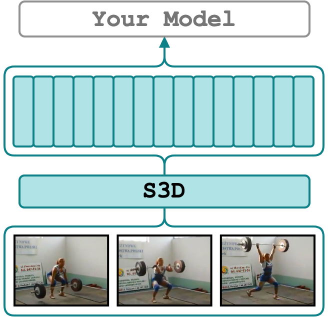

S3D

The S3D action recognition model was originally introduced in Rethinking Spatiotemporal Feature Learning: Speed-Accuracy Trade-offs in Video Classification. We support the PyTorch weights for Kinetics 400 provided by github.com/kylemin/S3D. According to the model card, with these weights, the model should achieve 72.08% top-1 accuracy (top5: 90.35%) on the Kinetics 400 validation set.
How the model was pre-trained?
My best educated guess is that the model was trained on densely sampled 64-frame 224 x 224 stacks
that were randomly trimmed and cropped from 25 fps 256 x 256 video clips (<= 10 sec).
Therefore, to extract features (Tv x 1024), we resize the input video such that min(H, W) = 224 (?)
and take the center crop to make it 224 x 224.
By default, the feature extractor will split the input video into 64-stack frames (2.56 sec) with no overlap
as it is during the pre-training and will do a forward pass on each of them.
This should be similar to I3D behavior.
For instance, given an ~18-second 25 fps video, the features will be of size 7 x 1024.
Specify, step_size, extraction_fps, and stack_size to change the default behavior.
What is extracted exactly?
The inputs to the classification head (see S3D.fc and S3D.forward) that were average-pooled
across the time dimension.
Quick Start

Ensure that the environment is properly set up before proceeding. See Setup Environment for detailed instructions.
Activate the environment
and extract features from the ./sample/v_GGSY1Qvo990.mp4 video and show the predicted classes
See the config file for ther supported parameters.
Supported Arguments
Argument |
Default |
Description |
|---|---|---|
stack_size |
64 |
The number of frames from which to extract features (or window size). If omitted, it will respect the config of model_name during training. |
step_size |
64 |
The number of frames to step before extracting the next features. If omitted, it will respect the config of model_name during training. |
extraction_fps |
25 |
If specified (e.g. as 5), the video will be re-encoded to the extraction_fps fps. Leave unspecified or null to skip re-encoding. |
device |
"cuda:0" |
The device specification. It follows the PyTorch style. Use "cuda:3" for the 4th GPU on the machine or "cpu" for CPU-only. |
video_paths |
null |
A list of videos for feature extraction. E.g. "[./sample/v_ZNVhz7ctTq0.mp4, ./sample/v_GGSY1Qvo990.mp4]" or just one path "./sample/v_GGSY1Qvo990.mp4". |
file_with_video_paths |
null |
A path to a text file with video paths (one path per line). Hint: given a folder ./dataset with .mp4 files one could use: find ./dataset -name "*mp4" > ./video_paths.txt. |
on_extraction |
print |
If print, the features are printed to the terminal. If save_numpy, save_pickle, or save_h5, the features are saved to either .npy, .pkl, or .h5 file. |
output_path |
"./output" |
A path to a folder for storing the extracted features (if on_extraction is save_numpy, save_pickle, or save_h5; the latter saves to one file). |
keep_tmp_files |
false |
If true, the reencoded videos will be kept in tmp_path. |
tmp_path |
"./tmp" |
A path to a folder for storing temporal files (e.g. reencoded videos). |
show_pred |
false |
If true, the script will print the predictions of the model on a down-stream task. It is useful for debugging. |
Credits
- The kylemin/S3D implementation.
- The S3D paper: Rethinking Spatiotemporal Feature Learning: Speed-Accuracy Trade-offs in Video Classification.
License
MIT